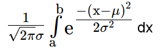

Normalverteilung
Eine Zufallsvariable X sei normalverteilt mit Erwartungswert μ, Standardabweichung σ und Varianz σ2.
Das Formular berechnet nach Klick auf den entsprechenden Button
I) die W'keit P, dass X einen Wert von mindestens a und höchstens b annimmt
gemäss
P(a≤X≤b) =

II) die Abweichung Δ vom Erwartungswert bei vorgegebener Wkeit W gemäss P(μ-Δ≤X≤μ+Δ) = W
- μ= σ= σ2=
- I) a= b =
- II) Wkeit:
Beispiel
Bei der Produktion eines Massenartikels hat sich gezeigt, dass die Längen normalverteilt sind mit μ = 25cm und σ = 0.2cm.I) Artikel mit mehr als 0.5cm Abweichung von μ sind unbrauchbar. Wie viel Prozent der produzierten Artikel sind unbrauchbar?
II) Wie gross darf die Abweichung Δ vom Erwartungswert sein, wenn damit 2% der Artikel unbrauchbar werden?
Lösung
I) Da P(24.5≤X≤25.5) = 98.76%, so sind 1.24% der Artikel unbrauchbar.
II) Da P(24.53546≤X≤25.46454) = 0.9798, so ist Δ ≈ 0.4645cm
Approximation Binomial- mit Normalverteilung
Binomialverteilung mit Histogramm
©1997 - 2026 www.mathematik.ch |🔍